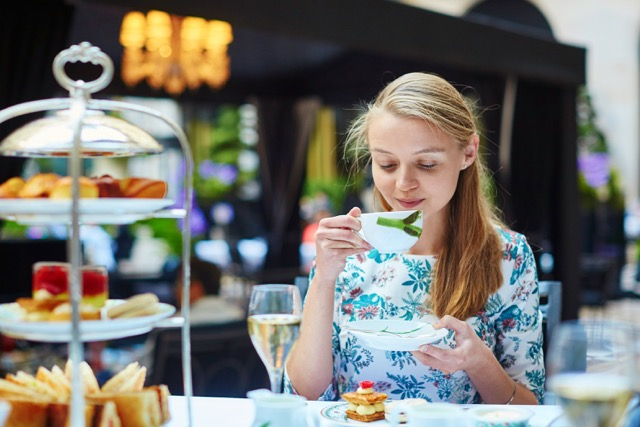

The Basics
Why tea parties?
Throwing coordinated and planned parties is a lost art in this day! It’s fun and unique to put in the effort to plan a tea party, you can make invitations, get dressed up and make food. It’s a cute activity you can do with your friends, can range from simple to elaborate and can be applied to many different occasions. Do something new and throw a tea party, you won’t regret it!

History:
The first recorded tea party was in England in 1662 to celebrate a royal marriage. Throughout the 1700s tea parties were enjoyed by English nobility. But towards the end of the century tea became more accessible with the rise of Coffeehouses.
Tea parties increased in popularity in the coming centuries. Eventually they grew among the common people and became less elaborate and more informal. This led to a distinction between “afternoon tea” and “high tea”. Although high tea was actually for the common class and afternoon was for the nobility.
Types of Tea Parties
If you really want to get into the specifics, like mentioned above there are different kinds of tea parties, which have different kinds of menus and traditions:
- High tea:
- Afternoon Tea:
- Low Tea
A tea that’s served with a hearty dinner of meat, bread and vegetables. Originally for the working class after a hard day of labor.
A more casual tea, served with finger sandwiches and hors d’oeuvres (appetizers/finger foods), scones* and petite desserts.
Tea served with a snack as something in between meals.
How to Throw a Tea Party:
- Pick a theme
- Pick a menu
- Get a tea set
- Make or buy the treats
- Make a guest list (and invite them!)
- Get/make decorations
- Pick a venue
- Pick the tea
- Get an outfit
- Have fun!